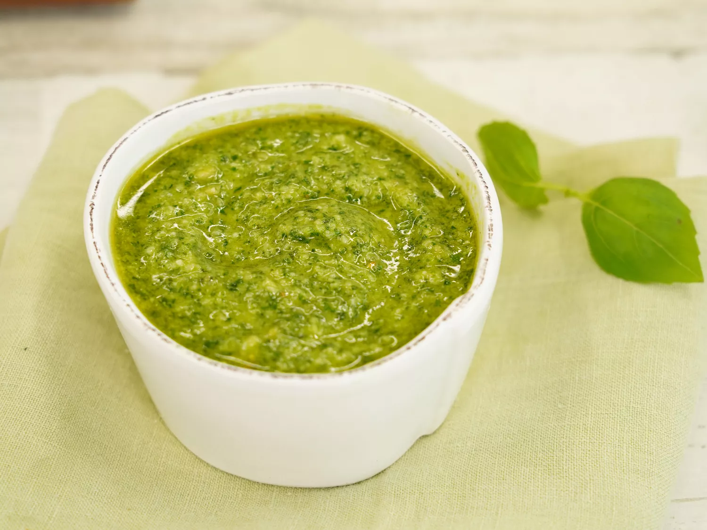

Pesto

Description
Pesto is a vibrant green, fresh-tasting sauce that originated in Genoa, Italy. It’s traditionally made with a combination of fresh basil, Parmesan cheese, olive oil, garlic, and pine nuts.
Ingredients
- Basil
- Cheese
- Oil
- Nuts
- Garlic
- Lemon Juice
Steps
- Combine basil, Parmesan cheese, olive oil, pine nuts, and garlic in the bowl of a food processor or blender. Blend to a smooth paste. Add lemon juice, if desired, and quickly pulse to combine.